Terracotta Army
A famous archaeological site in Xi'an, Shaanxi Province, discovered in 1974. Thousands of life-sized terracotta soldiers were buried with the first emperor of China.
 Learn more →
Learn more →
A famous archaeological site in Xi'an, Shaanxi Province, discovered in 1974. Thousands of life-sized terracotta soldiers were buried with the first emperor of China.
Learn more →
The imperial palace of Ming and Qing dynasties in Beijing, with over 900 buildings and centuries of Chinese history behind its red walls.
 Learn more →
Learn more →
Located in Dunhuang, the Mogao Caves house an enormous collection of Buddhist artwork, murals, and scriptures dating back over a thousand years.
 Learn more →
Learn more →
Sanxingdui is a Bronze Age archaeological site in Sichuan, known for its mysterious and sophisticated ancient relics.
 Learn more →
Learn more →
The resting place of Dr. Sun Yat-sen, located at the foot of Purple Mountain in Nanjing.
 Learn more →
Learn more →
A classic Yuan dynasty garden, famed for its labyrinthine rockeries.
 Learn more →
Learn more →
A prominent Ming Dynasty wooden pavilion located in Liaocheng, Shandong. Known as the northernmost ancient wooden tower of its kind in China, built in 1374.
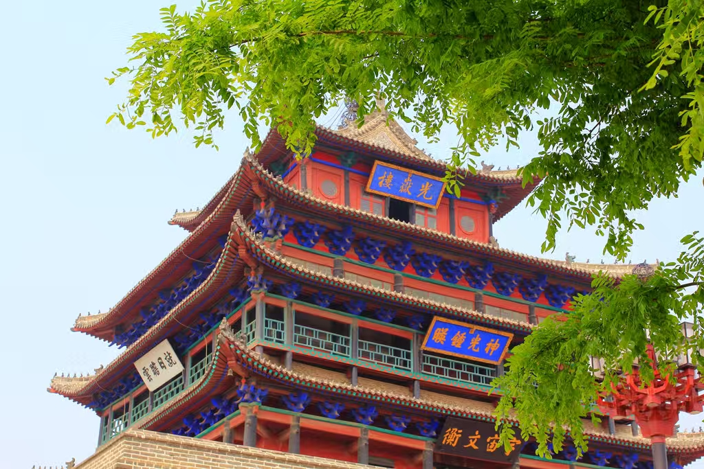
Learn more →Huishan Ancient Town is an ancient town with a long history, famous for its rich ancestral hall culture, garden art, clay figurine culture and Jiangnan water town style.
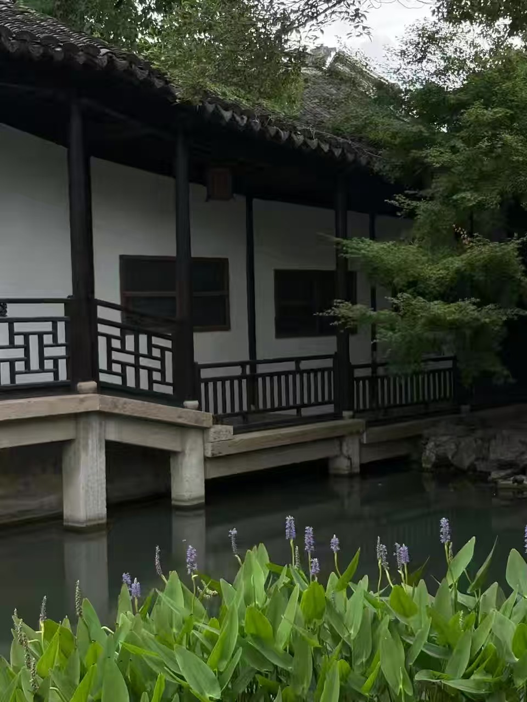
Learn more →Xuanwu Lake is a historic lake park in central Nanjing, known for its scenic views and lotus-filled waters.
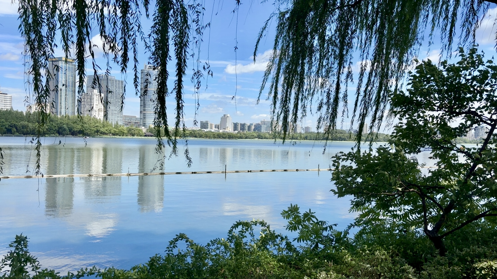
Learn more →A type of traditional communal earthen building in Fujian, China, known for its unique circular and square designs and Hakka heritage.
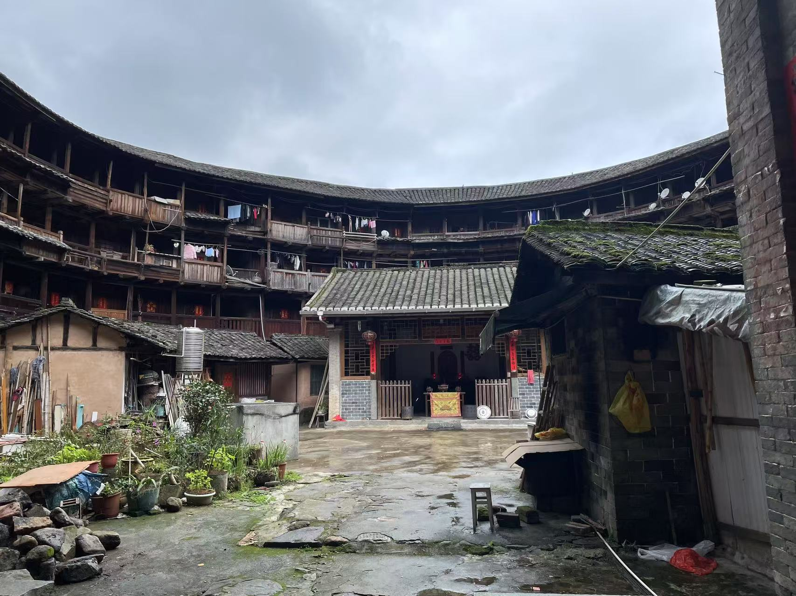
Learn more →A monumental series of fortifications built across northern China to protect against invasions.
 Learn more →
Learn more →
The tomb of the Hongwu Emperor, founder of the Ming dynasty, located at the foot of Purple Mountain in Nanjing.
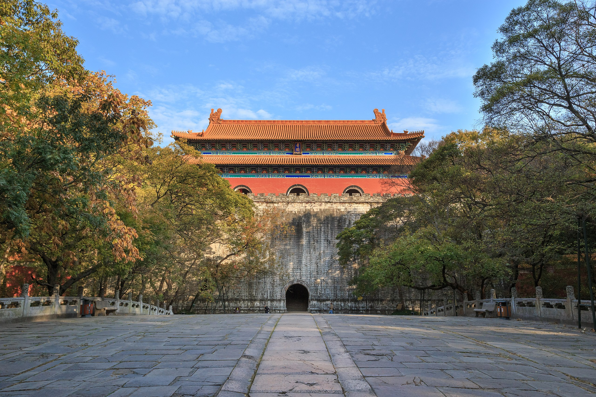
Learn more →One of the largest surviving ancient city walls in the world, built during the early Ming dynasty to protect Nanjing.
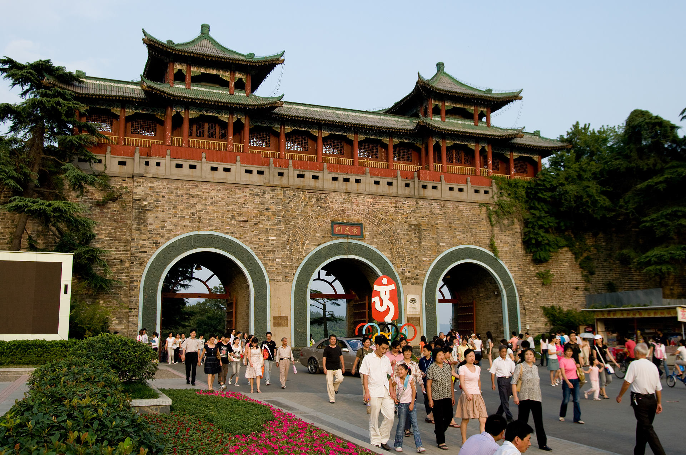
Learn more →A UNESCO World Heritage site near Luoyang, famous for thousands of Buddhist statues and carvings in limestone cliffs.
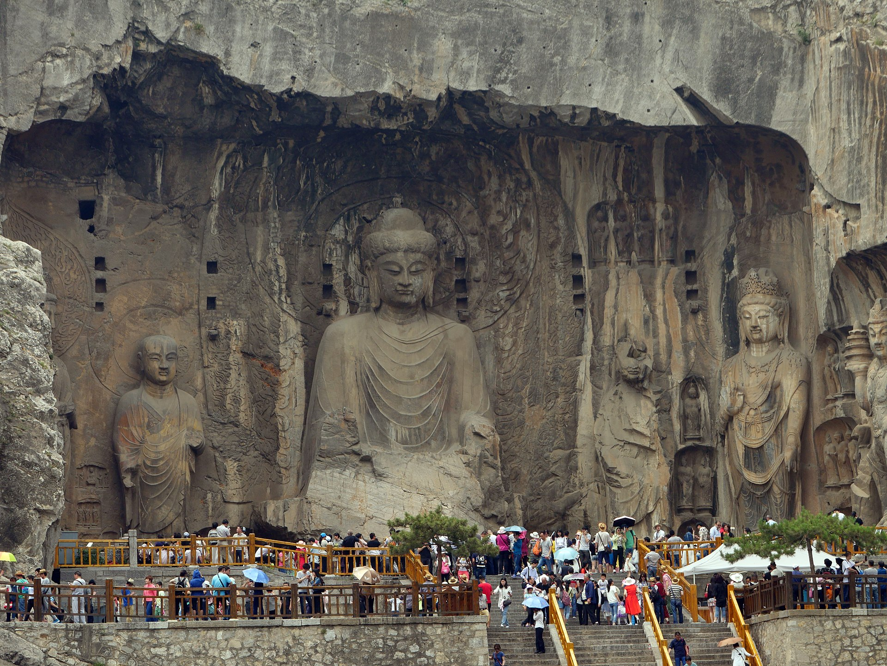
Learn more →Mausoleums of the emperors of the Western Xia dynasty, blending Tang, Tibetan, and local architectural influences.
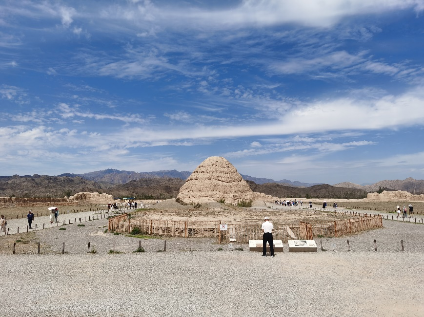
Learn more →A classical garden in Nanjing, originally built in the Ming dynasty and later restored, showcasing Jiangnan garden design.
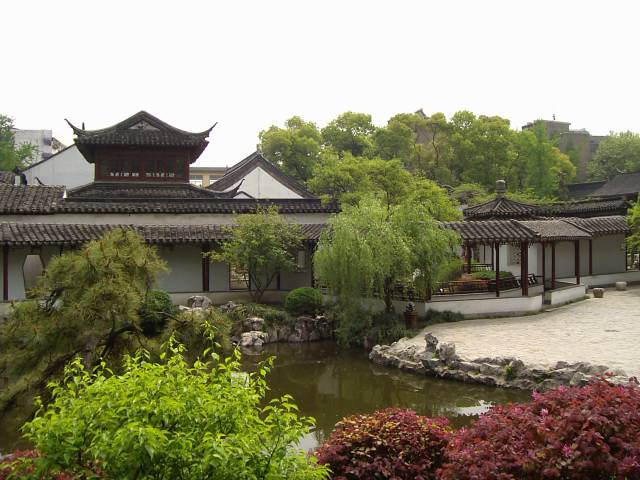
Learn more →A historic tower overlooking the Yangtze River in Wuhan, celebrated in Chinese poetry and culture for centuries.
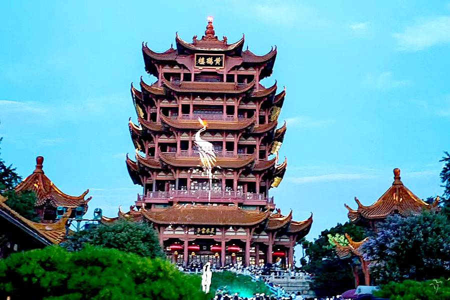
Learn more →One of the three great ancient projects of China, the Karez is an ingenious underground water system in Turpan, Xinjiang. It channels snowmelt and groundwater from the Tianshan Mountains through vertical shafts and tunnels to the arid basin, supporting life and trade along the Silk Road for centuries.
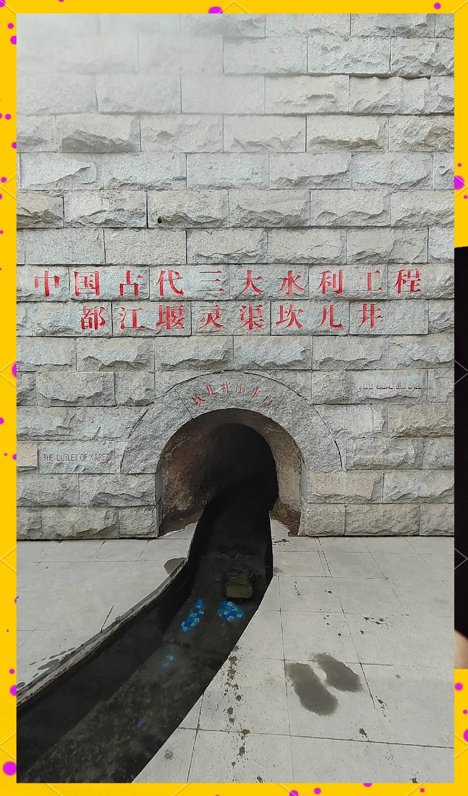
Learn more →Located in Xuzhou, Jiangsu Province, Huanglou Pavilion is a cultural landmark with origins tracing back to the Han dynasty. Rebuilt many times throughout history, it has long been a place of gathering, poetry, and memory, symbolizing the resilience and cultural depth of Xuzhou. Today, it stands as a blend of history and landscape, overlooking the city with a view that has inspired generations of visitors.
 Learn more →
Learn more →
The A-Ma Temple, or Ma Kok Miu, was built in 1488 and is dedicated to Mazu, the goddess of the sea. According to legend, the name “Macau” itself comes from this temple. With its halls, courtyards, pavilions, and stone carvings, the temple reflects a blend of Taoist, Confucian, Buddhist, and folk beliefs. Today, it stands as both a spiritual site and a UNESCO World Heritage landmark.
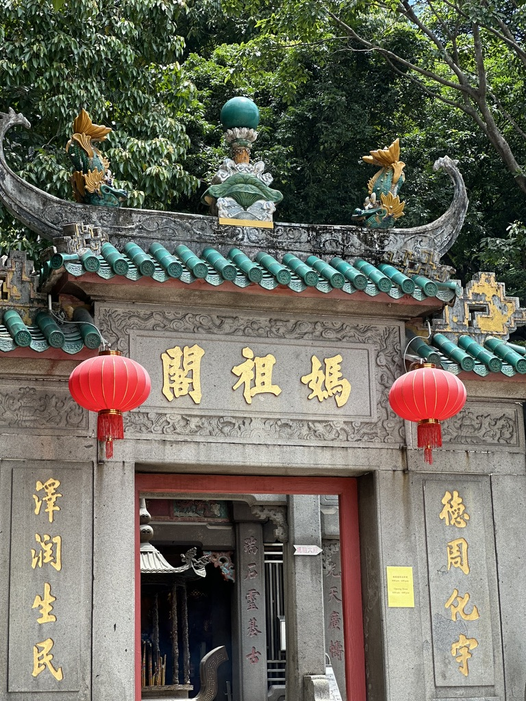
Learn more →Yangzhou, nestled along China’s Grand Canal, is a historic city famed for its tranquil beauty and refined culture. Known as the “city of gardens and canals,” Yangzhou is home to the iconic Slender West Lake, elegant bridges, and Huaiyang cuisine — one of China’s four great culinary traditions. The city’s slow rhythm, willow-lined waterways, and poetic atmosphere once inspired the saying, “In misty March, go down to Yangzhou.” Today, it remains a living reflection of Jiangnan’s grace — where tea, art, and time itself flow gently.
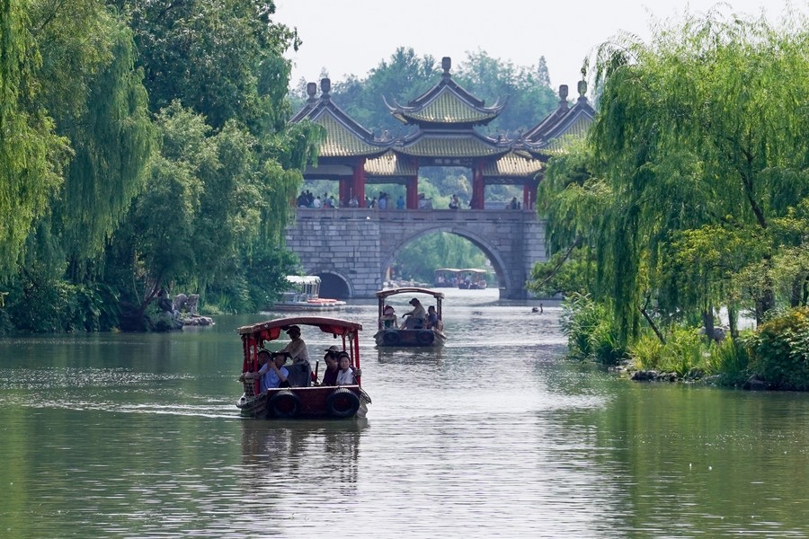
Learn more →